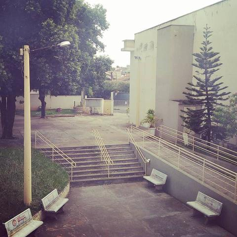
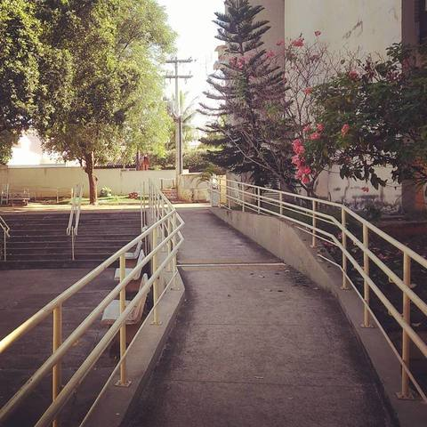
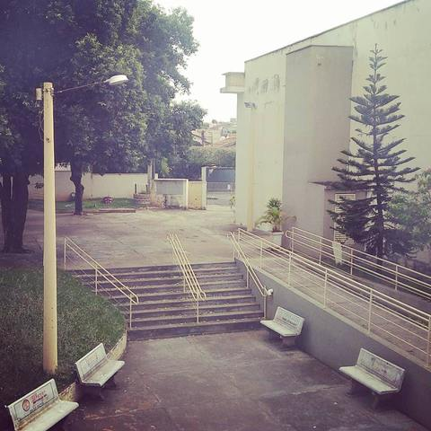
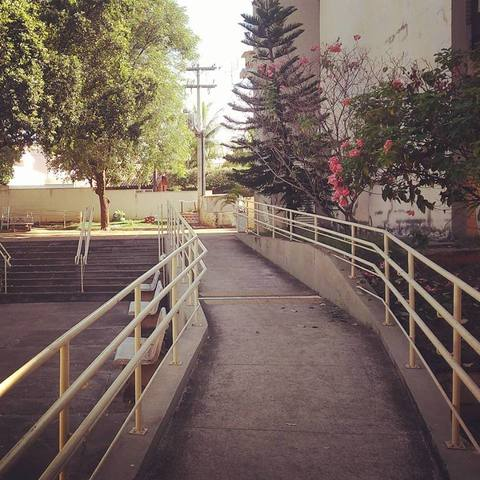

Faculdade de Tecnologia Prof º José Camargo - Fatec Jales
 



Criada pelo Decreto nº 52.122, de 3 de setembro de 2007 a Fatec Jales iniciou suas atividades em 10 de setembro de 2007, oferecendo como curso superior inicial o de Tecnologia em Agronegócio, com 80 vagas semestrais, sendo 40 no período matutino e 40 no período noturno, com a duração de seis semestres.
No início do ano de 2010, foi implantado o curso de Tecnologia em Sistemas para Internet, com 70 vagas semestrais, sendo metade em período vespertino e outra metade em período noturno,assim como, Tecnologia em Agronegócio, o curso de Tecnologia em Sistemas para Internet tem duração de 3 anos.
No segundo semestre 2013, o curso de Sistemas para Internet passou a ser oferecido nos períodos matutino e noturno.No segundo semestre de 2014, foi implantado o curso de Tecnologia em Gestão Empresarial, com 40 vagas semestrais no período noturno, sendo oferecido também na modalidade a distância no primeiro semestre de 2015,com 40 vagas semestrais. Atualmente a Fatec Jales oferece quatro cursos: incluindo Análise e Desenvolvimento de Sistemas que foi implantado na instituição no segundo semestre de 2017 no período matutino.
Conheça um pouco da instituição e seus cursos


A Fatec Jales oferece diversos eventos e cursos aos alunos, como o Click Melhor Idade. Iniciado em 2011, o Click é destinado a pessoas com mais de 50 anos, que desejam inclusão digital, nele a população pode obter noções básicas de informática e navegação na internet. As aulas são ministradas de maneira voluntária pelos acadêmicos dos cursos de Tecnologia em Análise e Desenvolvimento de Sistemas e Sistemas para Internet, sob a supervisão de seus professores coordenadores.


O II SIMPÓSIO DE TECNOLOGIA DA FATEC JALES – II SITEF, será realizado de 08 a 11 de agosto de 2018, visando ser instrumento de divulgação, reflexão, formação e atualização profissional, por meio de palestras, minicursos e apresentação de artigos científicos das áreas de Agronegócio, Gestão Empresarial e Tecnologia da Informação e Comunicação.
O II SIMPÓSIO DE TECNOLOGIA DA FATEC JALES destina-se, prioritariamente, aos estudantes de graduação das áreas de Agronegócio, Gestão Empresarial e Tecnologia da Informação e Comunicação, além de docentes universitários, pesquisadores e empresários dos referidos setores.